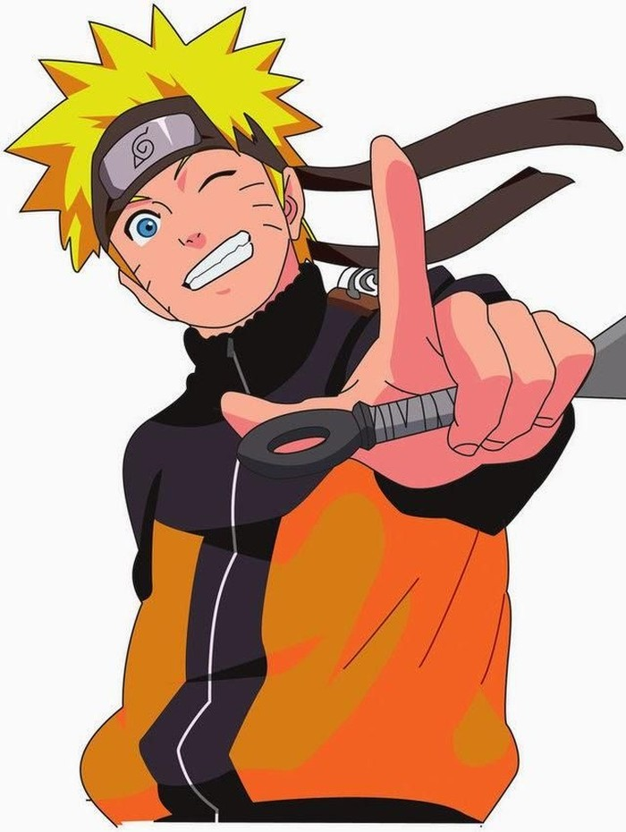

Uzumaki Naruto
Naruto Uzumaki (うずまきナルト Uzumaki Naruto) adalah tokoh fiktif dari serial anime dan manga Naruto. Ia merupakan tokoh utama dalam serial ini. Ia digambarkan sebagai bocah berambut pirang dan bermata biru. Di pipinya ada enam goresan mirip kumis. Ia sering terlihat memakai jaket dan celana panjang berwarna jingga.
Menurut cerita, Naruto adalah seorang ninja dari desa Konoha (Konohagakure), sebuah desa fiktif yang konon tersembunyi di antara rimba yang dikelilingi gunung. Sejak kecil ia dijauhi oleh penduduk desa, sehingga ia tidak pernah merasakan kebahagiaan yang sesungguhnya.
10 Oktober adalah hari ulang tahun Naruto, dan merupakan Hari Olahraga dan Kesehatan ("Taiiku no hi") di Jepang.